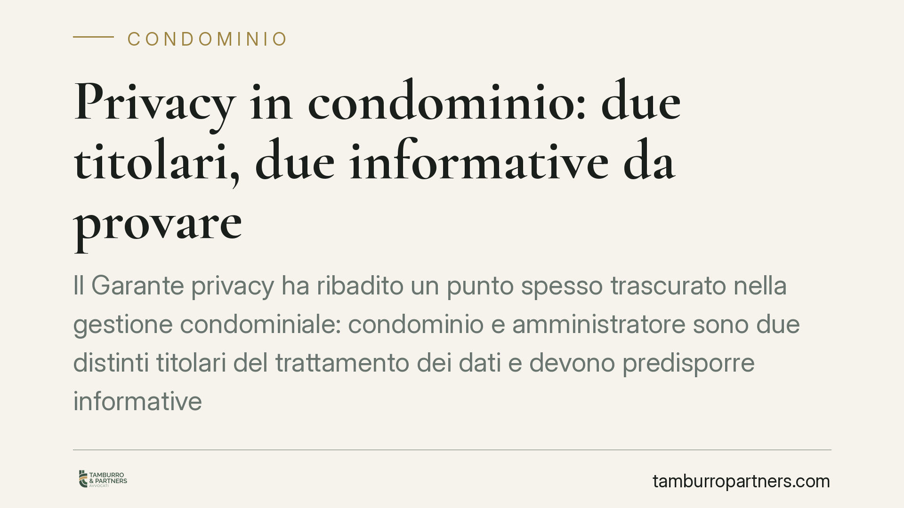

Privacy in condominio: due titolari, due informative da provare
Il Garante privacy ha ribadito un punto spesso trascurato nella gestione condominiale: condominio e amministratore sono due distinti titolari del trattamento dei dati e devono predisporre informative separate. Non basta averle: occorre dimostrare che siano state effettivamente rese disponibili ai condòmini. Un chiarimento che incide sulla responsabilità dell'amministratore e sulla tenuta documentale dello stabile.

Il chiarimento del Garante
Il Garante per la protezione dei dati personali è tornato su un tema che genera confusione ricorrente: la gestione delle informative privacy nel condominio. Il punto centrale è la corretta individuazione di chi tratta i dati e a quale titolo.
Nella prassi si tende a considerare l'amministratore come unico responsabile della privacy dello stabile. È un errore. Nel condominio convivono due soggetti distinti, ciascuno con obblighi propri.
Inquadramento normativo
Il riferimento è il Regolamento UE 2016/679 (GDPR). L'art. 4, paragrafo 1, n. 7 definisce il titolare del trattamento come chi determina finalità e mezzi del trattamento dei dati personali. È la figura su cui grava la responsabilità di redigere l'informativa e di rispettare i principi di liceità, trasparenza e responsabilizzazione (accountability).
Applicando questa definizione al condominio, emergono due titolari autonomi:
- il condominio, in quanto ente di gestione, tratta i dati dei condòmini per le finalità legate alla vita comune dello stabile (riparto spese, verbali assembleari, morosità);
- l'amministratore, che tratta dati anche per finalità proprie della sua attività professionale (rapporti con fornitori, gestione contabile, adempimenti fiscali del proprio studio).
Ne consegue che le informative sono due e distinte. Una riferita al condominio come titolare, l'altra riferita all'amministratore per i trattamenti che compie in nome proprio. Non è ammissibile un documento unico che confonda i due piani.
Il nodo della prova
Il Garante insiste su un aspetto operativo decisivo: non basta predisporre le informative, occorre dimostrare di averle rese disponibili agli interessati.
Il principio di accountability introdotto dal GDPR ribalta l'onere: è il titolare che deve poter documentare la conformità dei propri trattamenti. In caso di contestazione o reclamo, l'amministratore che non riesce a provare la consegna o la messa a disposizione dell'informativa si trova in posizione debole, a prescindere dalla correttezza sostanziale del suo operato.
La disponibilità può essere assicurata con diverse modalità: pubblicazione in bacheca condominiale, invio via posta elettronica, allegazione ai documenti assembleari, pubblicazione su area riservata. Ciò che conta è la tracciabilità.
Implicazioni pratiche
Per l'amministratore, il chiarimento significa maggiore esposizione a responsabilità se la documentazione privacy è incompleta o non tracciata. Un'informativa esistente ma non provata equivale, sul piano difensivo, a un'informativa mancante.
Per i condòmini, il diritto a ricevere informazioni chiare sul trattamento dei propri dati si concretizza in due documenti distinti, che è opportuno conservare.
Per il condominio come ente, la corretta gestione documentale diventa parte della diligenza richiesta nella tenuta della contabilità e degli atti dello stabile.
Cosa fare in concreto
- Verificate la presenza di due informative distinte: una del condominio come titolare, una dell'amministratore per i trattamenti propri. Eliminate eventuali documenti unici che sovrappongono le due figure.
- Documentate la messa a disposizione: conservate prova della pubblicazione in bacheca, dell'invio via email o dell'inserimento negli atti assembleari, con data e modalità.
- Aggiornate le informative in occasione di nuovi trattamenti o cambi di amministratore, evitando testi generici scaricati senza adattamento allo specifico stabile.
- Inserite un richiamo a verbale dell'avvenuta consegna o disponibilità delle informative, così da avere riscontro nella documentazione assembleare.
- In caso di reclamo o accesso ai dati, ricostruite tempestivamente la catena documentale prima di rispondere all'interessato o al Garante.
La gestione della privacy condominiale non è un adempimento formale da esaurire con un documento in bacheca. È una responsabilità che va costruita e, soprattutto, dimostrata nel tempo.
---
*Contributo informativo a cura di Tamburro & Partners - Avv. Giuseppe Tamburro. Non costituisce parere legale.*
Ogni condominio ha una storia a sé.
Se gestisci un'amministrazione e vuoi un confronto su una specifica questione condominiale, scrivi allo studio. Ti rispondiamo entro un giorno lavorativo.